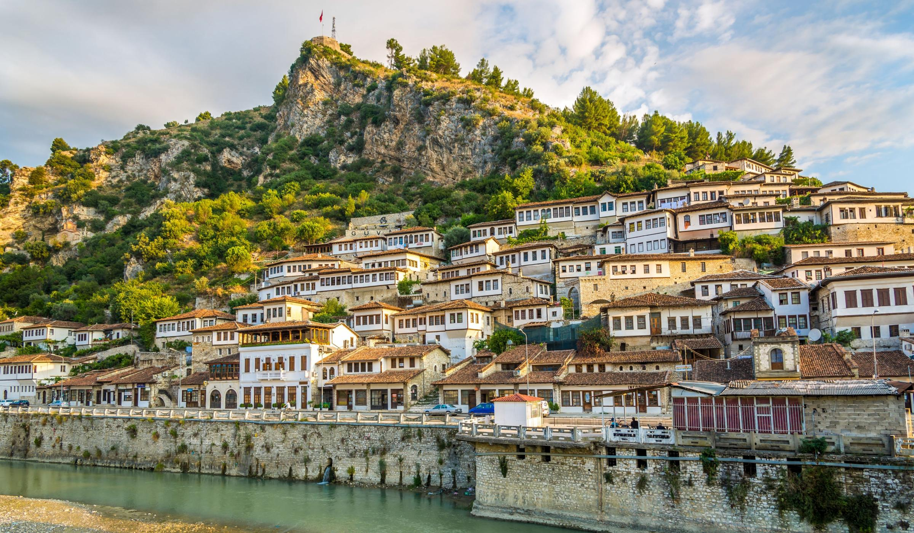

Berat

Informacion për Beratin
Informacione të përgjithshme
Vendndodhja: Shqipëria jug-qendrore
Popullsia: Rreth 60,000 banorë
Qarku: Qarku i Beratit
Statusi UNESCO: Qytet i mbrojtur nga UNESCO që nga viti 2008
Pse është i veçantë Berat
Berati njihet si “Qyteti i një mijë dritareve”, për shkak të arkitekturës së veçantë osmane me shtëpi të bardha me dritare të mëdha dhe të shumta. Qyteti ndodhet mes maleve dhe kalon lumi Osum përmes tij, duke i dhënë një pamje të bukur natyrore.
Vendet kryesore për të vizituar
- Kalaja e Beratit: E ndërtuar mbi një kodër, përfshin kisha, xhami dhe shtëpi ende të banuara.
- Lagjet historike Mangalem dhe Gorica: Të ndara nga lumi Osum, me shtëpi karakteristike dhe rrugica me kalldrëm.
- Muzeu Onufri: Brenda kalasë, i kushtuar piktorit të famshëm shqiptar të ikonave, Onufri.
- Muzeu Etnografik: Ndodhet në një shtëpi tradicionale dhe paraqet jetën shqiptare të shekujve të kaluar.
Trashëgimi kulturore dhe fetare
Berati është simbol i harmonisë fetare, ku bashkëjetojnë kisha dhe xhami. Në qytet ndihen ndikimet si të krishtera ortodokse, ashtu edhe islame.
Produkte vendase
- Vera dhe rakia: Zona e Beratit është e njohur për vreshtat dhe prodhimin e rakisë.
- Vaj ulliri: Cilësi e lartë, prodhim vendas.
- Gastronomia: Provo qifqitë (toptha me oriz), tavën me kos, dhe petullat tradicionale.
Natyra dhe aktivitetet
- Kanioni i Osumit (afër): I përshtatshëm për rafting, ecje dhe fotografi.
- Mali i Tomorrit: Vend i shenjtë për bektashinjtë dhe dashamirësit e natyrës.
Moti në Berat:
BERAT WEATHER
Përshkrim i shkurtër: Berati është një nga qytetet më të vjetra dhe më të bukura të Shqipërisë. Njihet për shtëpitë e bardha osmane të ndërtuara në shpat të kodrës, të cilat krijojnë pamjen karakteristike me “një mijë dritare”. Është qytet i mbrojtur nga UNESCO për trashëgiminë kulturore dhe historike. Ndodhet buzë lumit Osum dhe i rrethuar nga male.
🌟 Aktivitetet kryesore turistike:
- Vizito Kalane e Beratit (Kalaja): Një kala madhështore në majë të kodrës ku ende jetojnë banorë. Brenda gjen kishat e vjetra, xhamitë dhe pamje panoramike të qytetit.
- Muzeu Onufri: Ndodhet brenda kalasë dhe ekspozon ikona bizantine të piktorit të famshëm shqiptar Onufri.
- Ecje në lagjet historike Mangalem dhe Gorica: Dy lagje tradicionale të ndara nga lumi Osum. Mangalemi është lagje myslimane, ndërsa Gorica ka histori të krishterë.
- Ura e Goricës: Një urë karakteristike osmane prej guri që lidh dy lagjet dhe ofron pamje të bukura për fotografi.
- Provo verën dhe gatimet tradicionale: Zona e Beratit është e pasur me kantina vere (si Cobo, Nurellari). Mund të bësh degustim vere dhe të shijosh ushqime si “tavë kosi”, “qofte”, apo byrekët vendas.
- Ekskursion në malin e Tomorrit: Mal i shenjtë për shqiptarët, shumë i përshtatshëm për hiking dhe për të shijuar natyrën.
- Rafting në Kanionet e Osumit (afër Beratit): Aventurë ideale për adhuruesit e natyrës dhe sporteve ujore, sidomos në pranverë.
Moti në Kuçovë:
KUÇOVË WEATHER
Përshkrim i shkurtër: Kuçova ndodhet në jug të Shqipërisë, në afërsi të Beratit. Është një qytet me histori industriale, i njohur dikur si "qyteti i naftës" për shkak të nxjerrjes së naftës në zonë që nga periudha e Mbretërisë dhe më pas gjatë regjimit komunist. Edhe pse më pak i zhvilluar turistikisht, Kuçova ka një atmosferë autentike dhe interesante për ata që duan të eksplorojnë Shqipërinë jashtë itinerareve të zakonshme.
🌟 Aktivitetet kryesore turistike:
- Vizitë në strukturat e vjetra industriale: Rrënojat e rafinerive dhe depozitave të vjetra të naftës ofrojnë një pamje unike të historisë industriale të Shqipërisë.
- Shëtitje në qendrën e qytetit: Qendra ka arkitekturë karakteristike të periudhës socialiste, me sheshe të gjera dhe ndërtesa të stilit sovjetik.
- Parku i qytetit: Një vend i qetë për relaks, me shumë gjelbërim dhe ambiente për familje.
- Udhëtime ditore në Berat ose në natyrën përreth: Kuçova është shumë afër Beratit, ndaj mund të përdoret si bazë për të eksploruar qytete më të mëdha ose zona natyrore përreth.
- Takim me komunitetin lokal: Qytetarët janë mikpritës dhe tregojnë me krenari historinë dhe përditshmërinë e tyre. Ideale për ata që kërkojnë përvoja autentike kulturore.
Moti në Skrapar:
SKRAPAR DISTRICT WEATHER
Përshkrim i shkurtër: Skrapari ndodhet në juglindje të Shqipërisë dhe është i njohur për natyrën e egër, historinë e pasur dhe traditat e veçanta. Ky rajon malor është i famshëm për kanionet e Osumit, rakinë tradicionale të Skraparit dhe mikpritjen e ngrohtë të banorëve vendas. Skrapari është një destinacion ideal për turistët aventurierë dhe ata që duan të zbulojnë thesare të fshehura të Shqipërisë.
🌟 Aktivitetet kryesore turistike:
- Rafting në Kanionet e Osumit: Një nga aktivitetet më të njohura në Shqipëri. Kanionet janë spektakolare dhe ofrojnë përvoja emocionuese, veçanërisht në pranverë kur ka më shumë ujë.
- Eksplorimi i shpellave: Shpella e Pirogoshit është ndër më të mëdhatë dhe më të bukurat në Shqipëri, me stalaktite, stalagmite dhe pasazhe të thella.
- Shijimi i rakisë së famshme të Skraparit: Rajoni është i njohur për prodhimin artizanal të rakisë së rrushit, një traditë që kalon brez pas brezi.
- Hiking dhe ecje malore: Malet përreth ofrojnë shtigje të bukura për ecje dhe panorama mbresëlënëse të natyrës së paprekur.
- Vizita në fshatrat tradicionale: Fshatra si Çepani apo Zhepa ruajnë stilin e jetesës së vjetër dhe janë të mbushura me histori dhe autenticitet.
- Takime kulturore: Gjatë verës mund të hasësh festa lokale me muzikë popullore, valle dhe gatime tradicionale.
Moti në Ura Vajgurore:
URA - VAJGURORE WEATHER
Përshkrim i shkurtër: Ura Vajgurore, që sot është pjesë e Bashkisë Dimal, ndodhet në jug të Shqipërisë, midis Beratit dhe Kuçovës. Është një qytet i vogël, i njohur për historinë e tij të lidhur me industrinë e naftës dhe për murale të mëdha artistike që janë bërë të famshme ndërkombëtarisht. Qyteti ka një atmosferë të qetë dhe ofron një ndërthurje të bukur midis trashëgimisë industriale dhe artit bashkëkohor publik.
🌟 Aktivitetet kryesore turistike:
- Shëtitje në qytet: Eksploro qytetin dhe shijo artin mural bashkëkohor, përfshirë veprën “Flirt” nga artisti Wild Drawing, e renditur mes muralëve më të mirë në botë.
- Vizitë në urën historike: Ura që i dha emrin qytetit është një simbol historik i ndërtuar për të lidhur zonën me industrinë e naftës.
- Eksplorim i mozaikut socialist: Një vepër monumentale në qendër të qytetit që paraqet punëtorë, artizanë dhe fermerë – dëshmi e artit të realizmit socialist.
- Vizitë në xhaminë lokale: Një xhami e vjetër me arkitekturë tradicionale që pasqyron historinë osmane të zonës.
- Ekskursione në natyrë: Vetëm disa kilometra nga Kanionet e Osumit, ideal për hiking, rafting dhe fotografi spektakolare.
- Udhëtime ditore në Berat: Me vetëm pak minuta largësi, mund të vizitosh një nga qytetet më historike dhe të bukura të Shqipërisë.
Moti në Poliçan:
POLIÇAN WEATHER
Përshkrim i shkurtër: Poliçan është një qytet i vogël në juglindje të Shqipërisë, i njohur për historinë e tij industriale dhe natyrën e bukur përreth. I themeluar në vitet 1960 nga regjimi komunist për prodhimin e armëve, qyteti ka një trashëgimi të pasur kulturore dhe është i rrethuar nga male dhe lugina të bukura. Sot, Poliçan ofron një atmosferë të qetë dhe mundësi për të eksploruar historinë dhe natyrën shqiptare.
🌟 Aktivitetet kryesore turistike:
- Vizitë në Kalasë e Poliçanit: Një fortesë antike e shekullit të IV, që ofron pamje panoramike të qytetit dhe rrethinës.
- Ngjitje në Malin e Tomorrit: Një destinacion i njohur për hiking, me shtigje që çojnë në majë dhe ofrojnë pamje spektakolare të natyrës.
- Vizitë në Liqenin e Poliçanit: Një vend i qetë për relaks, me mundësi për shëtitje, piknik dhe peshkim.
- Eksplorim i Parkut Kombëtar Qafë Shtama: Një park natyror me shtigje ecjeje, pika panoramike dhe ujëvara, ideal për dashamirësit e natyrës.
- Vizitë në Kishën e Shën Mitrit: Një monument kulturor i shpallur nga shteti shqiptar, që pasqyron historinë fetare të zonës.
- Ekskursione në Banjat Termale të Bënjës: Pishina natyrore me ujëra të ngrohta, të vendosura në zemër të Maleve të Tomorrit.
- Rafting dhe Kayaking në Lumin Osum: Aktivitetë aventurash në kanionet e Osumit, të njohura për bukurinë dhe emocionet që ofrojnë.
- Vizitë në Qendrën Kulturore të Poliçanit: Një vend ku mund të shijoni aktivitete kulturore, ekspozita dhe shfaqje lokale.
- Shijimi i kuzhinës tradicionale: Provoni gatime si Tava e Kosit, Speca të mbushura dhe Fërgesë, në restorante lokale si Ballkoni i Poliçanit.